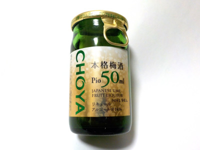

チョーヤ梅酒の小さい梅酒。
2023/02/10

50mlしか入っていない梅酒です。パッケージがキラキラしているのでとっても高級感があります。
味は濃くて甘かったです。ちょっとづつ味わいながら飲みました。
梅酒自体が濃いせいか、中に入っている梅はあっさりした感じがしました。私は梅を最後に食べましたが、途中で食べた方が味に変化があって良かったかもしれません。
大阪府羽曳野市駒ヶ谷160-1
2023/02/10

50mlしか入っていない梅酒です。パッケージがキラキラしているのでとっても高級感があります。
味は濃くて甘かったです。ちょっとづつ味わいながら飲みました。
梅酒自体が濃いせいか、中に入っている梅はあっさりした感じがしました。私は梅を最後に食べましたが、途中で食べた方が味に変化があって良かったかもしれません。